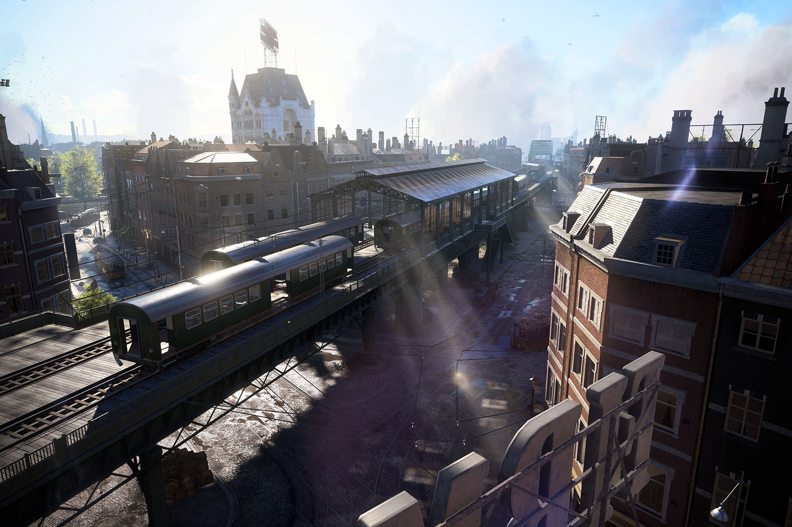

Le raycasting est une technique de rendu 3D principalement utilisée dans les "vieux" jeux vidéo et qui, à partir d'une simple matrice en 2D (ou 3D) permettait de réaliser en temps réel un environnement qui a l'apparence d'une 3D rudimentaire à l'image de Wolfenstein ou Doom 64
Attention à ne pas confondre le raycasting et raytracing qui sont deux techniques de rendu différentes malgré qu’elles soient confondues dans de nombreux ouvrages.

RAYTRACING
Le raytracing est une technique de rendu 3D qui permet de simuler la propagation de la lumière de manière très précise. Elle est utilisée pour créer des images et des vidéos très réalistes dans des domaines tels que l'animation.
Fonctionnement
- On peut représenter la map en 2D ( ou 3D ), avec une matrice à
deux dimensions dont chaque case indique la présence d’un mur avec un bit.
- Quant au joueur il est représenté par un vecteur dont l’origine est la position du joueur et la direction est celle du regard. Avec ce rendu, on colorie une colonne de pixels à la fois sur l’écran, il faut pour cela connaître la hauteur du mur vue depuis l’écran.
- Pour la calculer la hauteur du mur depuis le point de vue du joueur, on peut utiliser un rayon passant par celui-ci et envoyé via un angle défini en fonction de la position de la colonne sur l’écran, du nombre de colonnes de l’écran, de la direction du regard et la distance de l’écran par rapport au joueur.
- Cependant il reste un dernier petit problème, l’effet fish-eye. En fait, les rayons du bord du regard parcourent une distance plus grande que les rayons situés au centre du regard. Heureusement cet effet est facilement corrigeable grâce aux propriétés d’un
triangle rectangle, permettant d’obtenir un rendu propre.